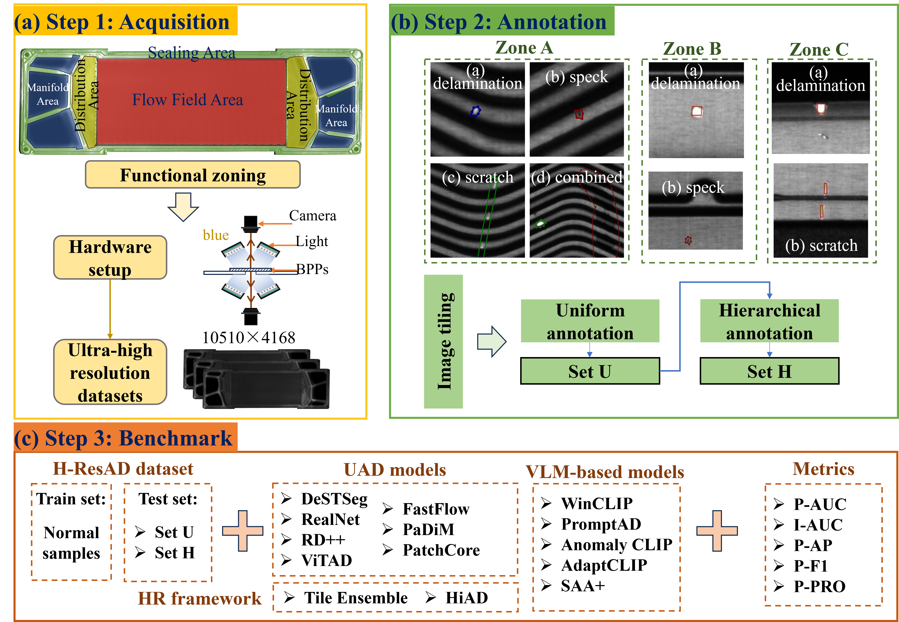
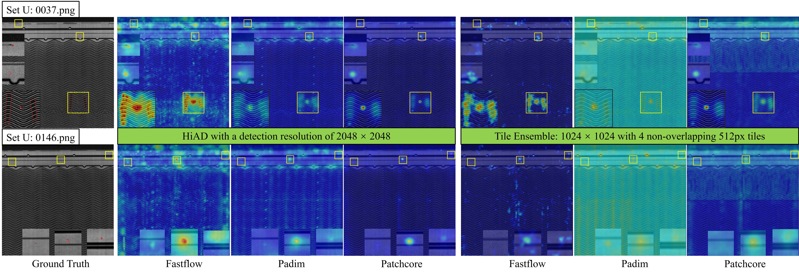

Authors
Chenghong Jiang, Changhui Liu*, and Xiangyong Du
Dataset Overview
Overview of H-ResAD dataset construction process.
How to Get the Dataset
This dataset is publicly available. It is free for professors and researcher scientists affiliated to a University. Permission to use but not reproduce or distribute our database is granted to all researchers given that the following steps are properly followed: Please send an email to 2410018@tongji.edu.cn before downloading the dataset. You will need a password to access the files of this dataset. Your Email MUST be sent from a valid University account and MUST include the following text:
1. Subject: Application to Download the H-ResAD Dataset
2. Name: [Your Name]
3. Affiliation: [University]
4. Department: [Your Department]
5. Position: [Your Job Title]
6. Email: [Your University Email]
7. Supervisor: [Name of Supervisor] (if student)
8. Supervisor Email: [Supervisor’s Email] (if 7 is provided)
I have read and agree to the terms and conditions specified on the H-ResAD webpage.
This dataset will only be used for research purposes.
I will not share or sell any part of the dataset.
Abstract
Unsupervised anomaly detection (UAD) has emerged as a practical paradigm for industrial visual detection due to its low reliance on defect samples. Yet, existing benchmarks fail to capture two critical aspects of precision manufacturing: the ultrasparse nature of submillimeter anomalies and the need for tolerance-aware hierarchical annotation across functional zones. To bridge this gap, we introduce H-ResAD, the first industrial anomaly detection dataset that jointly features 2048×2048 high-resolution tiles with an extremely low anomaly proportion of 0.05%, together with hierarchical annotations reflecting zone-specific tolerances of metallic bipolar plates. This design retains fine-grained defect details while realistically modeling the sparsity and functional constraints of real-world detection. We systematically benchmark seven representative UAD methods, two high-resolution frameworks (Tiled ensemble, HiAD), and five vision-language models (VLMs). Results show that conventional UAD excels at image-level discrimination but struggles with pixel-level localization and regional consistency. High-resolution frameworks substantially improve robustness, with HiAD particularly effective for ultrasparse anomaly detection. VLMs demonstrate promising zero/few-shot adaptability but remain limited under ultrasparse and hierarchical settings. Overall, H-ResAD establishes a challenging and realistic benchmark that closes the gap between academic datasets and industrial demands. Beyond evaluation, it provides a unified platform for future research into lightweight high-resolution architectures, tolerance-aware learning frameworks, and multimodal anomaly detection systems.
Performance Comparisions

Qualitative results of selected UAD and VLMs on H-ResAD dataset (Set U).
Performance Comparisions
Qualitative results of high-resolution frameworks with selected UAD methods on H-ResAD dataset (Set U).
Datasets Comparisons